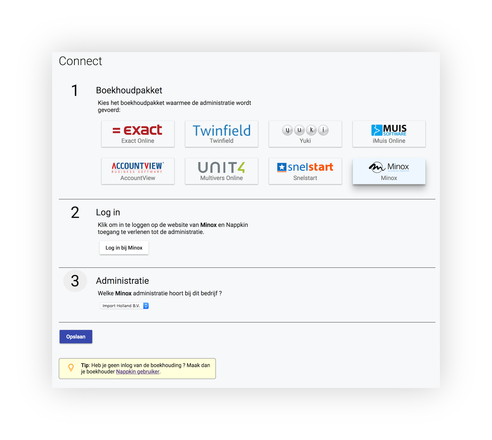
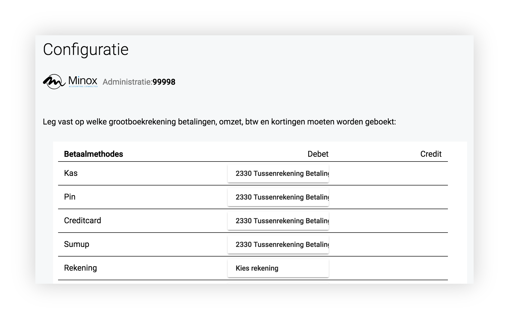

Koppeling boekhouding met Nappkin
Het configureren van de koppeling tussen de boekhouding en Nappkin moet gedaan worden op
https://my.nappkin.nl. Om toegang te krijgen tot deze website heb je een uitnodiging nodig van de Nappkin
klant.
De koppeling omvat de volgende stappen:

- verlenen van toegang tot de boekhouding aan Nappkin
- keuze van de juiste administratie
- vastlegging van de mapping van betaalmethodes en omzetgroepen in Nappkin enerzijds en grootboekrekeningen
anderzijds
De eerste twee stappen moeten eenmalig worden uitgevoerd, in het onderdeel Boekhouding, Connectie.
Authorisatie
De eerste stap verschilt per boekhoudpakket. In de meeste gevallen moet je eenmalig inloggen op de vertrouwde website van
de boekhoudsoftware (zogenaamde OAuth). Bij sommige systemen zoals Yuki en Snelstart moet je een geheime
key overnemen van de boekhoudwebsite en die invoeren in my.nappkin.
Administratie
Vervolgens moet je kiezen met welke adminstratie het Nappkin account is gekoppeld; in de meeste gevallen is er
maar één gekoppelde adminstratie die hoort bij de authorisatie uit de eerste stap en hoef je dus niets te
doen.
Mapping

Tot slot de belangrijkste stap: de mapping van grootboekrekeningen, in het onderdeel Boekhouding, Configuratie.
Betaalmethodes
We raden aan om voor alle betaalmethodes een speciale tussenrekening in de boekhouding te gebruiken. Dat is omdat het vaak
niet is toegestaan om rechtstreeks te boeken op een kas- of bankgrootboekrekening. Daarnaast is het op die
manier makkelijker om later een aansluiting te maken tussen bijvoorbeeld pin-afrekeningen en latere bankontvangsten.
Omzetgroepen
Per omzetgroep in Nappkin kan je een aparte grootboekrekening opgeven en wel per btw-tarief. Dat is nodig omdat
het in beginsel mogelijk is dat in een omzetgroep produkten met verschillende btw-tarieven zijn opgenomen.
Het is van belang om een grootboekrekening aan te wijzen als verstekrekening: die zal dan worden gebruikt als
voor een nieuwe omzetgroep nog geen koppeling is vastgelegd.
Korting
In Nappkin zijn standaard twee kortingen voorgedefinieerd 'Personeel' en 'Representatie' maar een gebruiker kan
zelf kortingen toevoegen. De verleende korting kan in de boekhouding als kostenpost geboekt worden of in
mindering op de omzet worden gebracht.
Kasopnames en -stortingen
Dit zijn kastransacties die zijn verwerkt in het (optionele) onderdeel Kasopmaak van Nappkin. Voorbeeld rekening:
"2900 Kruisposten kas".
Uitgaven
Dit betreft kleine uitgaven die ten laste van de kas zijn gedaan. Gebruikers kunnen in Nappkin een screenshot maken van de
factuur. Voorbeeld rekening: "4900 Kleine kasuitgaven".
Testboeking
Als je alle onderdelen hebt gekoppeld kan je een testboeking naar het boekhoudpakket sturen. Je kunt zo controleren
of alles goed is geconfigureerd. De boeking zal na controle weer verwijderd moeten worden.
Bijzonderheden
De volgende bijzonderheden zijn van toepassing voor de verschillende boekhoudpakketten:

De journaalpost wordt standaard via het dagboek Kasboek gedaan.

De journaalpost wordt standaard via het dagboek Memoriaal gedaan. Het is niet mogelijk om rechtstreeks op rekening
Kas te boeken, gebruik dus een tussenrekening zoals "Tussenrekening kas Nappkin".

De journaalpost wordt standaard via het dagboek Memoriaal gedaan. Het is niet mogelijk om rechtstreeks op rekening
Kas te boeken, gebruik dus een tussenrekening zoals "Tussenrekening kas Nappkin".